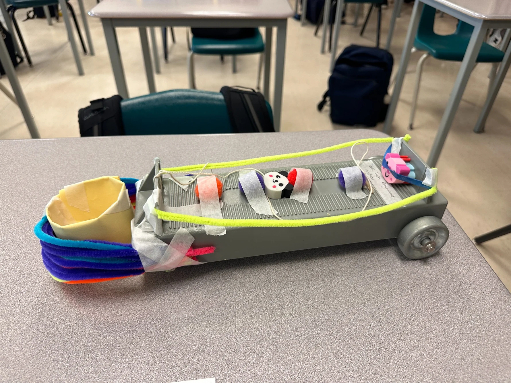
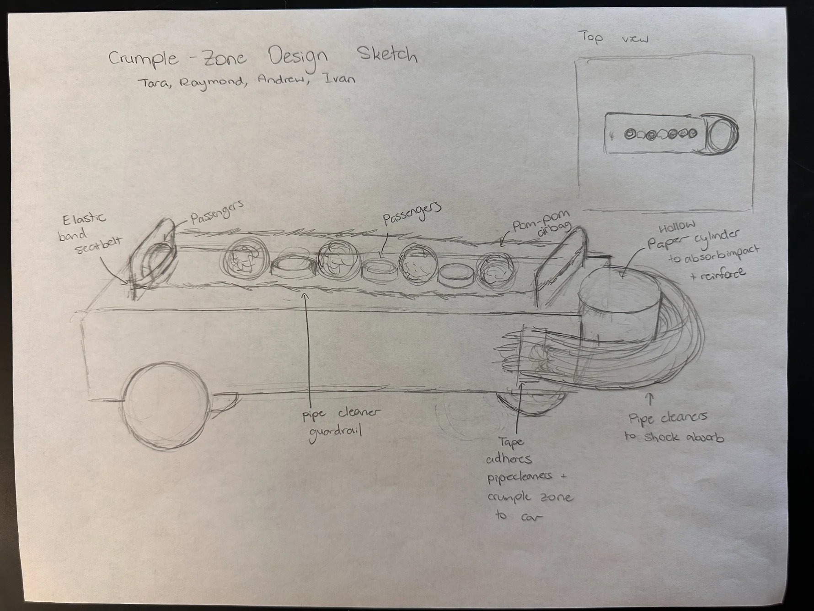
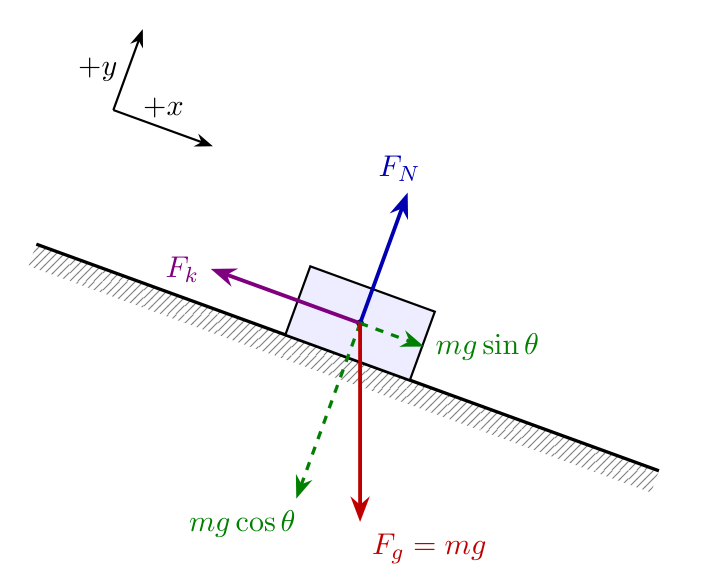
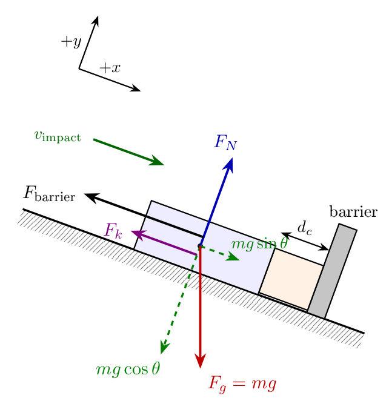

MATERIAL / 1
Paper crumple zone
Hollow paper cylinder at the front of the cart, designed to compress during impact.
This lab tested a model cart with a crumple zone and calculated its impact force using measurements from three trials.

The cart was fitted with a front crumple zone, front pipe-cleaner padding, pom-pom cushioning for the passengers, and restraints to hold the model passengers in place.

Labeled design sketchHollow paper cylinder at the front of the cart, designed to compress during impact.
Used along the sides as guardrails and at the front, where they also compress during impact.
Placed in front of the passengers to cushion them during the collision.
Elastic bands used to hold the model passengers in place.
The table below summarizes the three impact trials and compares the calculated barrier force with the rigid-cart model.
| Trial | Travel distance | Impact speed | Compression | Crumple force | Rigid force | Reduction |
|---|---|---|---|---|---|---|
| 1 | 0.773 m | 0.931 m/s | 2.2 cm | 12 N | 2,500 N | 99.5% |
| 2 | 0.775 m | 0.963 m/s | 2.8 cm | 9.9 N | 2,700 N | 99.6% |
| 3 | 0.777 m | 1.02 m/s | 2.3 cm | 14 N | 3,000 N | 99.6% |
The standard cart was used to estimate friction on the incline. The modified cart was then tested in three impact trials.
The calculations use Newton’s second law and constant-acceleration equations to estimate friction, impact speed, stopping acceleration, and force.


The measurements below were used in the friction, impact-velocity, and impact-force calculations.
Unmodified cart mass: 0.5085 kg. Released from rest on a ramp 10.65 cm high and 100 cm long.
| Trial | Time (s) | Displacement (m) |
|---|---|---|
| 1 | 1.75 | 0.887 |
| 2 | 1.85 | 0.879 |
| 3 | 2.00 | 0.885 |
| Mean | 1.87 | 0.884 |
Cart mass with modifications and passengers: 0.5789 kg. Each trial started from rest; the barrier was at 0.995 m.
| Trial | Initial time (s) | Final time (s) | Initial position (m) | Final position (m) | Elapsed time (s) | Travel distance (m) |
|---|---|---|---|---|---|---|
| 1 | 3.04 | 4.70 | 0.222 | 0.995 | 1.66 | 0.773 |
| 2 | 1.03 | 2.64 | 0.220 | 0.995 | 1.61 | 0.775 |
| 3 | 2.67 | 4.19 | 0.218 | 0.995 | 1.52 | 0.777 |
Deformation distance is the absolute difference between the two measured positions.
| Trial | Position before crumple (m) | Position at maximum crumple (m) | Time at maximum crumple (s) | Deformation distance (cm) |
|---|---|---|---|---|
| 1 | 0.645 | 0.623 | 4.74 | 2.2 |
| 2 | 0.615 | 0.643 | 2.73 | 2.8 |
| 3 | 0.649 | 0.626 | 4.22 | 2.3 |
Trial 1 is used as the worked impact example. The friction calculation uses measurements from the unmodified cart.
The height of the ramp was 10.65 cm and its length was 100 cm. Use the sine ratio to calculate the angle.
First, use the unmodified cart’s three descent trials to calculate the average time and distance. Since it started from rest, the displacement equation gives experimental acceleration. Compare that with the acceleration expected from gravity to determine friction.
The normal force is Fₙ = mg cos θ; friction acts up the ramp, opposite the cart’s motion.
The completed cart (mass 0.5789 kg) was released from rest. In Trial 1, it travelled 0.773 m in 1.66 s before reaching the barrier. Find the acceleration first, then the speed at impact.
The other two trials gave impact velocities of 0.963 m/s and 1.02 m/s.
The compression distance is the magnitude of the change in position. The cart stops at the barrier, so the final velocity is zero and the acceleration acts opposite the motion.
The negative acceleration indicates the cart is slowing down. Compression distances in Trials 2 and 3 were 2.8 cm and 2.3 cm.
Apply Newton’s second law along the ramp. Gravity still acts down the slope, while friction and the barrier force act up the slope. The pre-impact forces can be combined using the measured descent acceleration.
For comparison, keep the same mass and impact speed as Trial 1, but assume the cart stops over only 0.01 cm (0.0001 m). Use the same equations for acceleration and barrier force.
Because the stopping distance is shorter, the magnitude of the stopping acceleration is much larger.
Subtract the force with the crumple zone from the rigid-cart force. Divide by the rigid-cart force and multiply by 100%. Repeat for all three trials and average the reductions.
Negative impact acceleration indicates the cart is stopping.
| Trial | Descent acceleration | Impact velocity | Compression | Impact acceleration | Estimated stop time | Barrier force | Rigid force |
|---|---|---|---|---|---|---|---|
| 1 | 0.561 m/s² | 0.931 m/s | 2.2 cm | −20 m/s² | 0.047 s | 12 N | 2,500 N |
| 2 | 0.598 m/s² | 0.963 m/s | 2.8 cm | −17 m/s² | 0.058 s | 9.9 N | 2,700 N |
| 3 | 0.673 m/s² | 1.02 m/s | 2.3 cm | −23 m/s² | 0.045 s | 14 N | 3,000 N |
In the three trials, the front paper cylinder and pipe cleaners compressed 2.2–2.8 cm. This increased the cart’s stopping distance, reducing deceleration and impact force. The calculated barrier forces were 9.9–14 N, compared with 2,500–3,000 N for a rigid cart at the same impact speeds—an average reduction of 99.6%. Crumple zones are used in vehicles because longer stopping distances and times reduce the forces transmitted to passengers. The pom-poms cushioned the model passengers, while the elastic bands restrained them.
The cart travelled 77.3–77.7 cm before impact, exceeding the required 70 cm. Its front crumple zone compressed 2.2–2.8 cm during the collision.
The finished cart and the labeled design sketch.